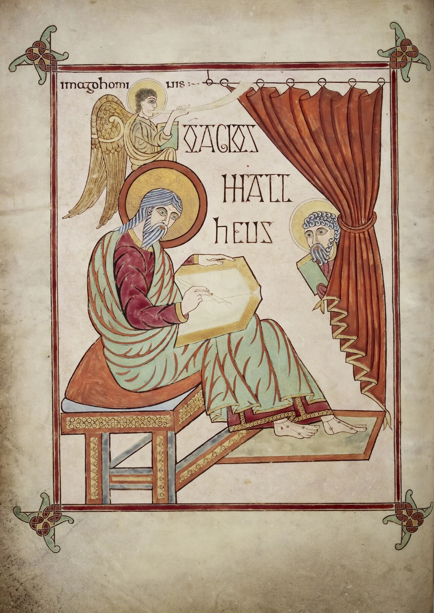

“Karanlık Çağ” denince çoğu kişinin aklına Roma’dan sonra Avrupa’nın bilgisizliğe gömüldüğü, şehirlerin sustuğu ve kültürün yok olduğu uzun bir dönem geliyor. Bu görüntü fazla düz. Batı Roma’nın siyasi düzeni çözülürken bazı kentler küçüldü, ticaret ağları değişti ve yazılı kaynaklar birçok bölgede azaldı; ama hayat durmadı. Yeni krallıklar, inançlar ve sanat biçimleri doğdu. Üstelik Avrupa’nın her yeri aynı anda aynı yoldan geçmedi.
“Karanlık” neye göre?
Tarih kitaplarında “Karanlık Çağlar” adı genellikle Batı Roma İmparatorluğu’nun sonundan sonra gelen Erken Orta Çağ’ın bazı bölümleri için kullanılır. Başlangıç ve bitişi üzerinde herkesin uzlaştığı tek bir takvim aralığı yoktur; Avrupa bağlamında kabaca 5. yüzyıldan 10. yüzyıla uzanan dönemden söz edilir. Buradaki “karanlık”, gökyüzünü ya da her yerde yaşanan ortak bir çöküşü değil; bazı bölgelerde yazılı kayıtların seyrekleşmesini ve sonraki yazarların Roma’yı ölçü kabul etmesini anlatıyordu.
476 yılı, Batı Roma’daki son imparator Romulus Augustulus’un tahttan indirilmesiyle sembolik bir dönüm noktasıdır; fakat insanlar bir sabah uyanıp kendilerini bambaşka bir dünyada bulmadı. Roma’nın doğu yarısı, yani Bizans İmparatorluğu, başkenti Konstantinopolis’ten yüzyıllarca yaşamayı sürdürdü. Batıda da Roma kurumlarının bazıları ve yerel yaşam biçimleri yeni siyasi düzenlerin içinde farklı şekillerde devam etti. “Roma düştü, her şey bitti” demek, uzun ve bölgeden bölgeye değişen dönüşümü tek güne sığdırır.
Bir imparatorluk biterken yenileri kuruluyordu
Batı Avrupa’da merkezi yönetimin zayıflaması, gücün farklı krallıklar ve yerel yöneticiler arasında paylaşılmasına yol açtı. Franklar, Vizigotlar, Ostrogotlar ve Anglo-Sakson krallıkları farklı tarihlerde yükseldi. Eski Roma topraklarında yaşayan insanlar için değişim her yerde aynı değildi: bir bölgede kent yaşamı gerilerken başka bir yerde yeni bir siyasi merkez ve ticaret ağı gelişebiliyordu.
Avrupa dışına bakınca tek bir “karanlık” anlatısının ne kadar dar kaldığı daha da belirginleşir. Bizans’ta Roma devlet geleneği, hukuk ve şehir yaşamı sürdü. 7. yüzyıldan itibaren genişleyen İslam dünyasında yeni devletler kuruldu; bilim, felsefe, tıp ve matematik alanlarında farklı merkezler öne çıktı. Bunlar birbirinden yalıtılmış hikâyeler değildi: Akdeniz ve çevresindeki ticaret, diplomasi, savaş ve fikir alışverişi toplumları birbirine bağlıyordu.
Sutton Hoo: toprağın sakladığı bir krallık
İngiltere’nin Suffolk bölgesindeki Sutton Hoo’da 1939’da açığa çıkarılan gemi gömüsü, Erken Orta Çağ’ın yoksul ve sanatsız bir çağ olduğu fikrine güçlü bir itiraz gibi duruyor. Miğfer, kalkan parçaları, silahlar, sofra eşyaları ve ince işçilikli takılar; dönemin seçkinlerinin zanaatını ve uzak bölgelerle kurduğu bağlantıları gösteriyor. Gömü 7. yüzyılın başlarına tarihleniyor; kime ait olduğu kesinleşmiş değil, ancak genellikle Doğu Anglia’daki kraliyet çevresiyle ilişkilendiriliyor.
Miğferin kendisi bile arkeolojinin nasıl çalıştığını anlatır: toprağa gömüldüğünde dağılmış yüzlerce parçadan bilim insanları ve konservatörler bir tasarım kurdu. Bugün gördüğümüz biçim, özgün parçaların dikkatli biçimde bir araya getirilmiş rekonstrüksiyonudur; tarihî eserin değeri de yalnızca parıltısında değil, kazı ve yorum sürecinde yatar.
Lindisfarne İncilleri: karanlığın içindeki renkler
Yaklaşık 700’lü yılların başında Northumbria’da hazırlanan Lindisfarne İncilleri, dönemin kitap üretiminin ne kadar zahmetli ve sanatsal olabildiğini gösterir. El yazması; metni, renkli süslemeleri ve karmaşık desenleriyle bir araya getirir. Bir kitabın elle kopyalanması ve boyanması uzun emek, eğitimli yazıcılar ve değerli malzemeler gerektiriyordu. Bu, dönemde herkesin okuryazar olduğu anlamına gelmez; ama bilginin manastır çevrelerinde korunup üretildiğini gösteren somut bir örnektir.

Bilgi kaybolmadı; dolaştığı yerler değişti
Roma dönemindeki kent okulları ve idari ağlar bazı batı bölgelerinde daralırken, yazılı bilginin önemli bir bölümü kilise ve manastır kurumlarında taşındı. El yazmaları kopyalandı, yerel diller ve Latincedeki metinler korundu; farklı bölgelerde eğitim ve kitap üretiminin kapsamı değişti. 8. ve 9. yüzyıllarda Karolenj hükümdarlarının yönetimindeki kültürel canlanma, din adamlarının ve saray çevresinin eğitimini ve metin kopyalamayı destekledi. Bu gelişme de herkese açık modern bir eğitim sistemi değildi; ama çağın yalnızca unutma ve yıkımdan ibaret olmadığını gösteriyor.
Arkeoloji de yazılı belgelerin bıraktığı boşlukları tamamlıyor. Mezarlar, metal işçiliği, yerleşim izleri, sikkeler ve ticaret eşyaları; insanların ne ürettiği, neye değer verdiği ve hangi ağlara katıldığı hakkında ipuçları sunuyor. Sutton Hoo gibi buluntular, metinlerin az olduğu yerde tarihin sessizleşmediğini hatırlatıyor: bazen geçmişi okumak için sayfadan çok toprağa bakmak gerekiyor.
Öyleyse karanlık çağ var mıydı?
Batı Roma’nın dağılmasından sonraki yüzyıllar kimi bölgelerde savaş, siyasi parçalanma, nüfus azalması ve ekonomik daralma getirdi. Bunları yok saymak da dönemi pembe bir tabloya çevirmek olur. Ancak aynı yüzyıllar yeni siyasi toplulukların, sanat biçimlerinin ve düşünce merkezlerinin ortaya çıktığı bir dönüşüm dönemiydi. “Karanlık Çağlar” ifadesi, sınırlı bir coğrafi bakışın ve az sayıdaki yazılı kaydın bütün çağa giydirdiği bir etiket; dönemin tamamını açıklamak için yetersiz.
Belki en doğru soru “Bu çağ ne kadar karanlıktı?” değil, “Hangi bölge için, kimin açısından ve hangi kaynaklara bakarak?” olmalı. Bir imparatorluğun sonuna bakınca kayıp görürüz; Sutton Hoo miğferine veya Lindisfarne sayfasına bakınca yeni bir dünyanın nasıl kurulduğunu. Orta Çağ'ın daha geniş dönem aralığı, üretim ve beslenme biçimleri için Orta Çağ rehberimize göz atabilirsiniz.
Kaynaklar ve görseller
- Chris Wickham, The Inheritance of Rome: A History of Europe from 400 to 1000. Penguin Books. Roma sonrası Avrupa’yı farklı topluluklar, bölgeler ve süreklilikler üzerinden ele alan tarih çalışması. Yayınevi bilgisi.
- Irina Skuld, “Why The Dark Ages Didn't Really Exist,” World History Encyclopedia (2024). “Karanlık Çağlar” etiketinin sınırlılıkları üzerine. Yazı/video kaydı.
- National Trust, Sutton Hoo. Arkeolojik alan, gemi gömüsü ve ziyaretçi/koruma bilgileri. Sutton Hoo.
- British Museum, Sutton Hoo miğferi, koleksiyon numarası 1939,1010.93. Koleksiyon kaydı.
- World History Encyclopedia, “Religion in the Middle Ages.” Erken Orta Çağ’daki inanç ve toplumsal çeşitlilik hakkında. Makale.
- Sutton Hoo miğferi fotoğrafı: Geni / Wikimedia Commons, kamu malı görsel kaydı. Lindisfarne İncilleri fotoğrafı: CC0 görsel kaydı. Görseller, sayfadaki tarihî eserlerin fotoğraflarıdır; yapay zekâ üretimi değildir.